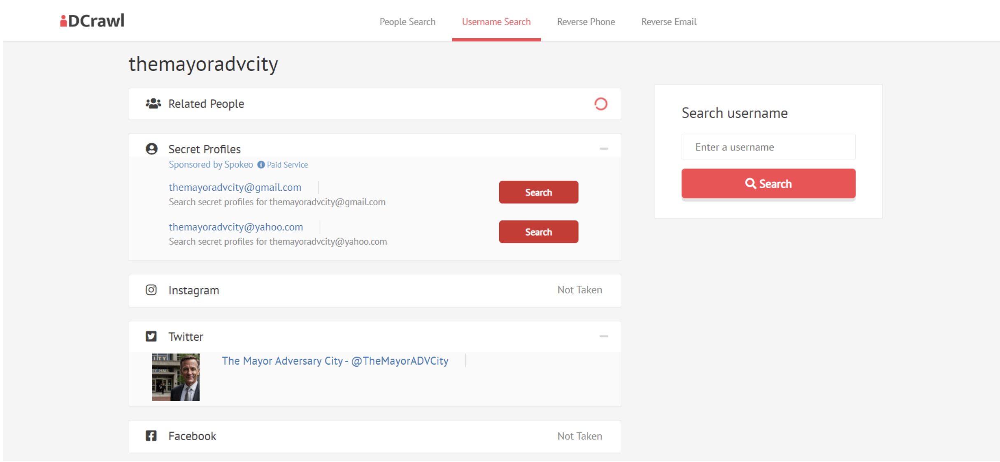
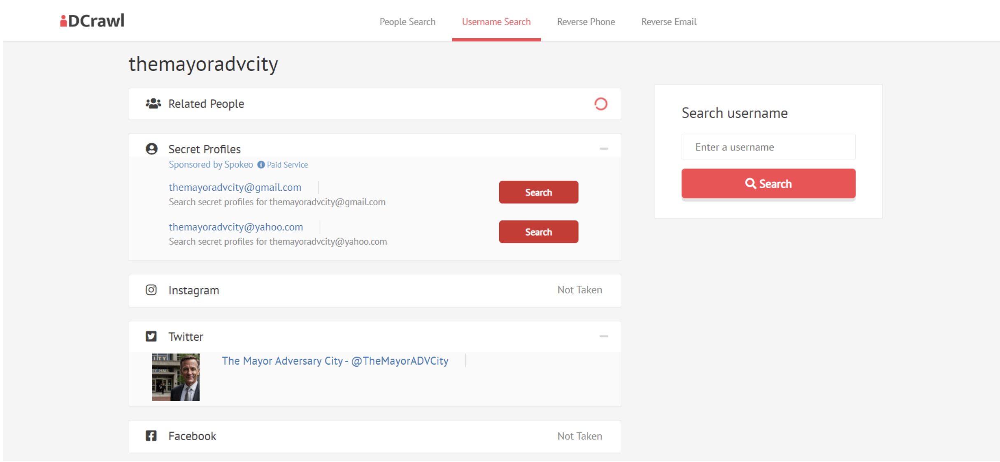
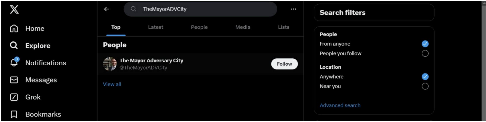
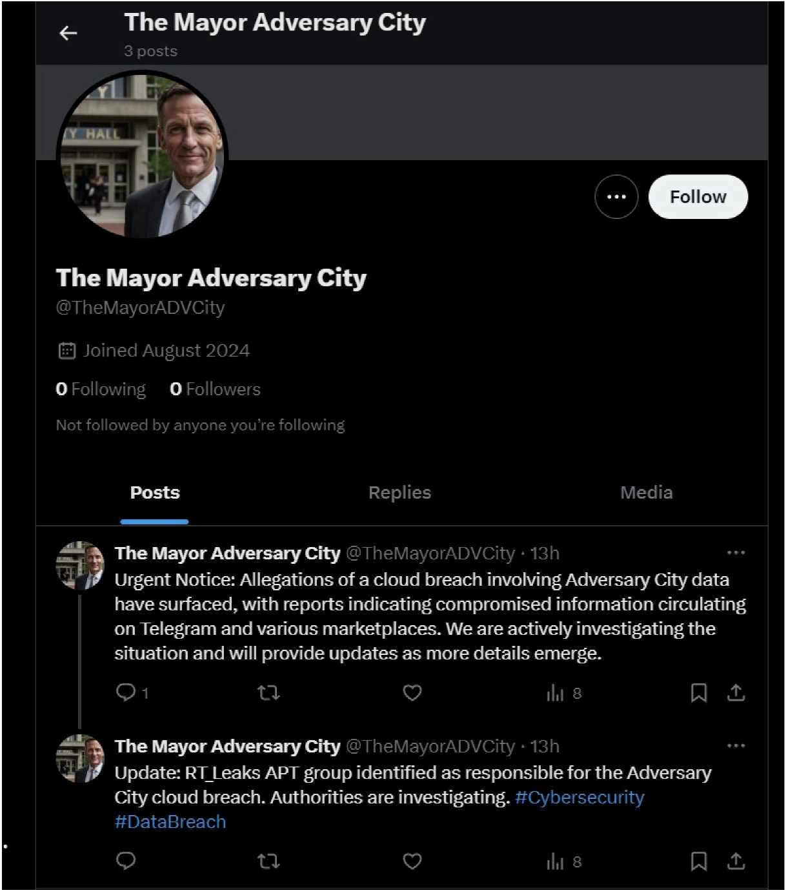
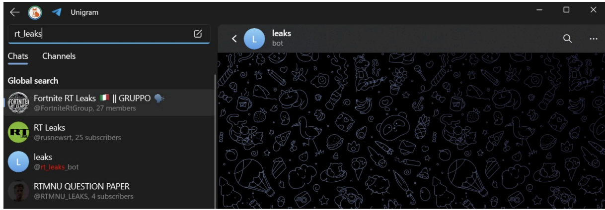
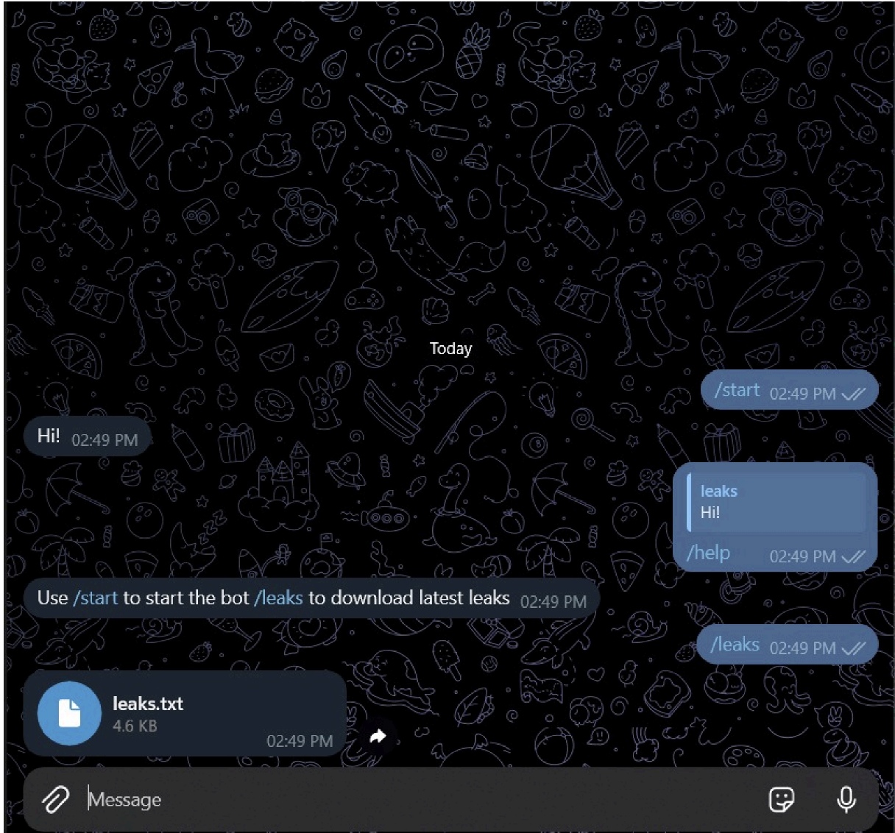
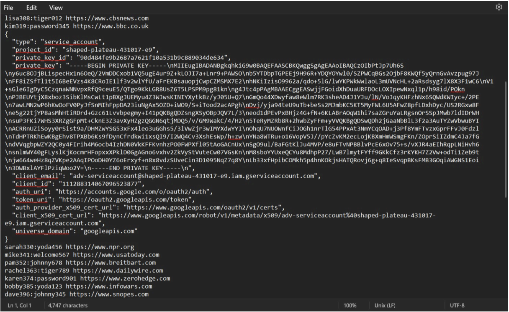
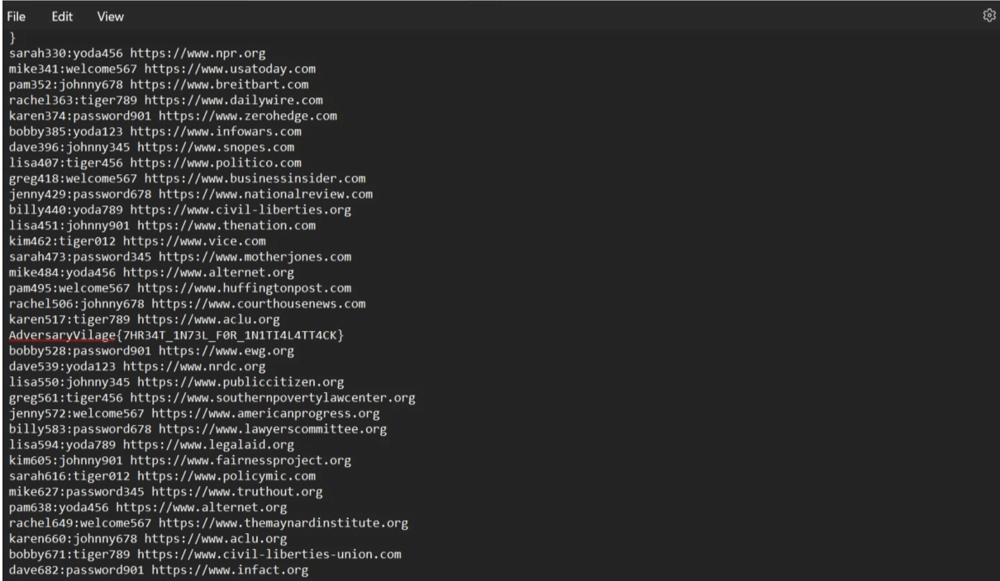
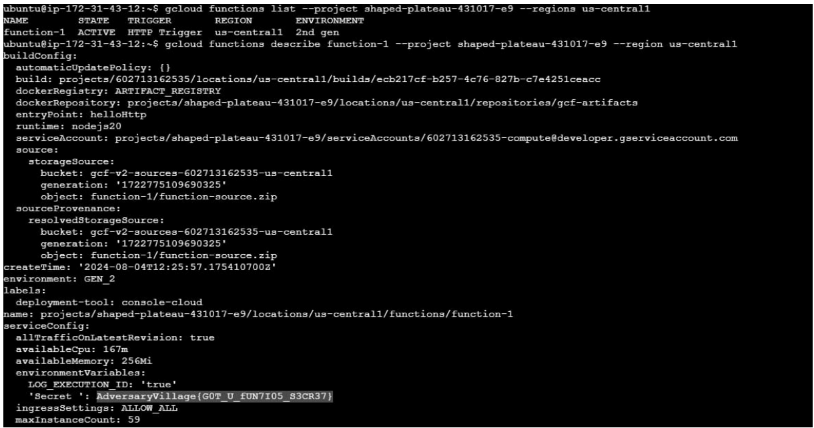

We are given a user handle named TheMayorADVCity. Using OSINT techniques we searched for all available sources related to this user.
 

An interesting handle was found from X(twitter) which have posts.
 There is a mention of RT_Leaks in one of the post. We had to do threat intelligence using this information. We conducted thorough searching in open forums, discord etc. But there were no results. Then we checked telegram for any possible channels and we found a bot
Interacting with the bot gave an option to show leaks, which gave a leak.text file.
Inside it we found a gcloud service account key
Also scrolling down there was a flag
AdversaryVilage{7HR34T_1N73L_F0R_1N1TI4L4TT4CK} Listing the cloud functions gives us a function , and inside the function environment variables we find the final flag.
Flag : AdversaryVillage{G0T_U_fUN7I05_S3CR37}